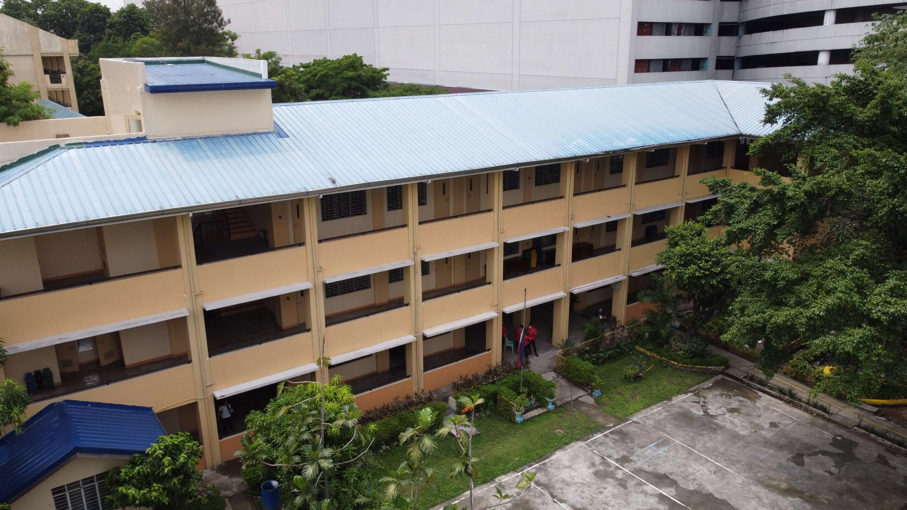

Our Locations
Discover the QCU Library's branches around the city and find your perfect study space
Open Now
San Bartolome Campus
Main Campus, QCU San Bartolome
Located at the main branch, offering a vast collection of academic resources and research materials.
25,000+ Books
Computer Lab
Study Rooms
Hours
Monday - Friday: 8:00 AM - 8:00 PM
Saturday: 9:00 AM - 5:00 PM

Open Now
San Francisco Campus
Near SM North EDSA, QCU San Francisco
Situated near SM North EDSA, this branch caters to students in science and technology courses.
15,000+ Books
Tech Hub
High-Speed WiFi
Hours
Monday - Friday: 8:00 AM - 6:00 PM
Saturday: 10:00 AM - 4:00 PM

Open Now
Batasan Campus
QCU Batasan Hills
Located in QCU Batasan, this branch offers specialized resources for education and public administration students.
18,000+ Books
Learning Commons
Study Café
Hours
Monday - Friday: 9:00 AM - 7:00 PM
Saturday: 9:00 AM - 3:00 PM